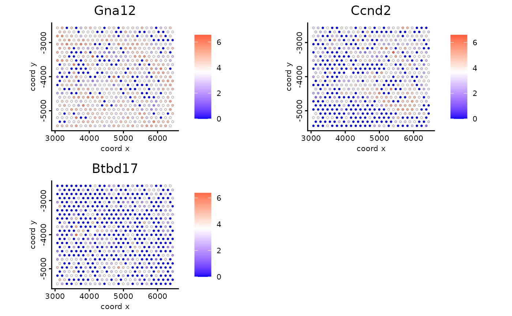

Visualize cells and feature expression according to spatial coordinates
Usage
spatFeatPlot2D_single(
gobject,
spat_unit = NULL,
feat_type = NULL,
show_image = FALSE,
gimage = NULL,
image_name = NULL,
largeImage_name = NULL,
spat_loc_name = "raw",
sdimx = "sdimx",
sdimy = "sdimy",
spat_enr_names = NULL,
expression_values = c("normalized", "scaled", "custom"),
feats,
order = TRUE,
cell_color_gradient = NULL,
gradient_midpoint = NULL,
gradient_style = c("divergent", "sequential"),
gradient_limits = NULL,
show_network = FALSE,
network_color = NULL,
edge_alpha = 0.5,
spatial_network_name = "Delaunay_network",
show_grid = FALSE,
grid_color = NULL,
spatial_grid_name = "spatial_grid",
midpoint = 0,
scale_alpha_with_expression = FALSE,
point_shape = c("border", "no_border", "voronoi"),
point_size = 1,
point_alpha = 1,
point_border_col = "black",
point_border_stroke = 0.1,
coord_fix_ratio = 1,
show_legend = TRUE,
legend_text = 8,
background_color = "white",
vor_border_color = "white",
vor_alpha = 1,
vor_max_radius = 200,
axis_text = 8,
axis_title = 8,
cow_n_col = NULL,
cow_rel_h = 1,
cow_rel_w = 1,
cow_align = "h",
theme_param = list(),
show_plot = NULL,
return_plot = NULL,
save_plot = NULL,
save_param = list(),
default_save_name = "spatFeatPlot2D_single"
)Arguments
- gobject
giotto object
- spat_unit
spatial unit (e.g. "cell")
- feat_type
feature type (e.g. "rna", "dna", "protein")
- show_image
show a tissue background image
- gimage
a giotto image
- image_name
name of a giotto image or multiple images with group_by
- largeImage_name
deprecated
- spat_loc_name
name of spatial locations
- sdimx
x-axis dimension name (default = 'sdimx')
- sdimy
y-axis dimension name (default = 'sdimy')
- spat_enr_names
names of spatial enrichment results to include
- expression_values
gene expression values to use
- feats
features to show
- order
order points according to feature expression
- cell_color_gradient
character. continuous colors to use. palette to use or vector of colors to use (minimum of 2).
- gradient_midpoint
numeric. midpoint for color gradient
- gradient_style
either 'divergent' (midpoint is used in color scaling) or 'sequential' (scaled based on data range)
- gradient_limits
numeric vector with lower and upper limits
- show_network
show underlying spatial network
- network_color
color of spatial network
- edge_alpha
alpha of spatial network
- spatial_network_name
name of spatial network to use
- show_grid
show spatial grid
- grid_color
color of spatial grid
- spatial_grid_name
name of spatial grid to use
- midpoint
expression midpoint
- scale_alpha_with_expression
scale expression with ggplot alpha parameter
- point_shape
shape of points (border, no_border or voronoi)
- point_size
size of point (cell)
- point_alpha
transparancy of points
- point_border_col
color of border around points
- point_border_stroke
stroke size of border around points
- coord_fix_ratio
fix ratio between x and y-axis (default = 1)
- show_legend
logical. show legend
- legend_text
size of legend text
- background_color
color of plot background
- vor_border_color
border colorr for voronoi plot
- vor_alpha
transparency of voronoi 'cells'
- vor_max_radius
maximum radius for voronoi 'cells'
- axis_text
size of axis text
- axis_title
size of axis title
- cow_n_col
cowplot param: how many columns
- cow_rel_h
cowplot param: relative heights of rows (e.g. c(1,2))
- cow_rel_w
cowplot param: relative widths of columns (e.g. c(1,2))
- cow_align
cowplot param: how to align
- theme_param
list of additional params passed to
ggplot2::theme()- show_plot
logical. show plot
- return_plot
logical. return ggplot object
- save_plot
logical. save the plot
- save_param
list of saving parameters, see
showSaveParameters- default_save_name
default save name for saving, don't change, change save_name in save_param
See also
Other spatial feature expression visualizations:
spatFeatPlot2D()
Examples
g <- GiottoData::loadGiottoMini("visium", verbose = FALSE)
spatFeatPlot2D_single(g, feats = c("Gna12", "Ccnd2", "Btbd17"))
